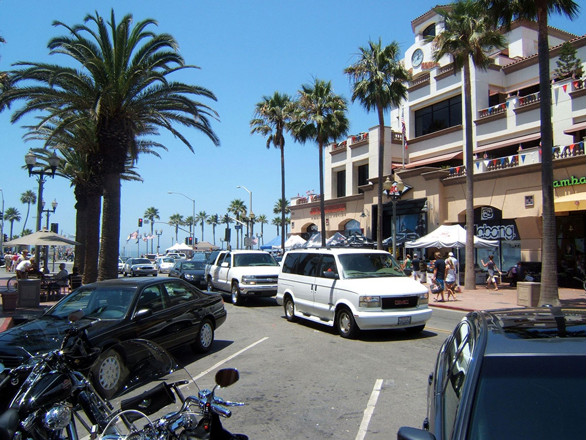
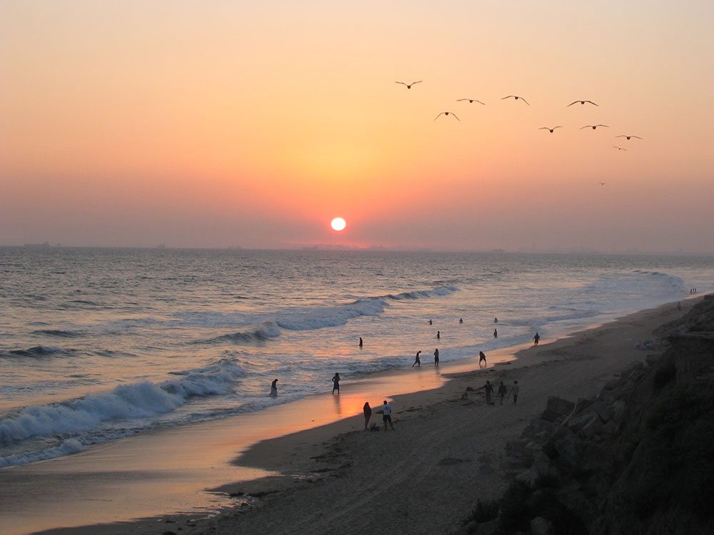

Long 9.5-mile (15.3 km) stretch of sandy beach, mild climate, excellent surfing, and beach culture
General Information
How to Get There
From Anaheim, CA (20 mi): Take CA-55 South to CA-73 South, merge onto I-405 North, exit at Beach Boulevard or Warner Avenue, and follow signs west to downtown Huntington Beach, the pier, and Surf City USA.
Overview
Huntington Beach, “Surf City USA,” has a 9½-mile stretch of sandy beach and a mild climate, and is one of California’s top surfing destinations, home to the U.S. Open of Surfing each summer. The wooden Huntington Beach Pier and Pacific City’s beachfront dining, the International Surfing Museum, the Bolsa Chica Ecological Reserve, and bonfire beach pits and bike paths add to the appeal.
Things to Do
Experience Surf City USA
Huntington Beach is one of Southern California's most iconic beach destinations and is internationally known as "Surf City USA." With more than 10 miles of sandy beaches, consistent waves, and a vibrant coastal atmosphere, the city attracts surfers, beachgoers, and outdoor enthusiasts from around the world.
Visit the Huntington Beach Pier
The Huntington Beach Pier is one of the longest municipal piers on the West Coast and serves as the city's most recognizable landmark. Visitors can enjoy scenic ocean views, fishing, photography, dining, and watching surfers ride the waves beneath the pier.
Enjoy Surfing and Beach Activities
Huntington Beach offers excellent conditions for surfing year-round and hosts major surfing competitions, including events of the World Surf League. Visitors can also enjoy swimming, volleyball, cycling, beachcombing, bonfires, and a variety of other coastal recreation activities.
Explore Downtown Huntington Beach
The downtown district near Main Street features restaurants, shops, entertainment venues, public art, and a lively beach-town atmosphere. Visitors can stroll between the beachfront and downtown area while enjoying local dining and shopping opportunities.
Discover Bolsa Chica Ecological Reserve
This protected coastal wetland habitat is one of Southern California's premier birdwatching destinations. Visitors can explore trails and observation areas while viewing migratory birds, shorebirds, and native wildlife within a restored estuarine ecosystem.
Visit Huntington Central Park
As the largest city-owned park in Orange County, Huntington Central Park offers lakes, gardens, walking paths, picnic areas, equestrian trails, and nature centers. It provides a peaceful contrast to the bustling beachfront environment.
Top Trails
Bolsa Chica Ecological Reserve Loop
Length: Approximately 5 miles round trip
Elevation Gain: Minimal
Difficulty: Easy
This flat coastal trail system winds through wetlands and estuary habitats, providing excellent opportunities for birdwatching, wildlife photography, and enjoying scenic views of protected coastal ecosystems.
Huntington Beach Bike Trail
Length: Approximately 8.5 miles one way
Elevation Gain: Minimal
Difficulty: Easy
Running parallel to the beach, this paved oceanfront path is ideal for walking, jogging, cycling, skating, and sightseeing. Visitors can enjoy uninterrupted coastal views while traveling along the shoreline.
Shipley Nature Trail
Length: Approximately 1 mile loop
Elevation Gain: Minimal
Difficulty: Easy
Located within Huntington Central Park, this peaceful nature trail passes through native plant habitats and provides opportunities to observe local wildlife in a quiet urban wilderness setting.
Talbert Regional Park Trail
Length: Approximately 4 miles round trip
Elevation Gain: Minimal
Difficulty: Easy
This multi-use trail connects coastal habitats, wetlands, and open space areas near the mouth of the Santa Ana River. It is popular for walking, running, cycling, and wildlife viewing.
Sources: Visit Huntington Beach official tourism information, including details on the Huntington Beach Pier, surfing culture, downtown attractions, beaches, outdoor recreation, and local events.
https://www.surfcityusa.com/https://www.surfcityusa.com/
Additional information verified through City of Huntington Beach resources, Bolsa Chica Ecological Reserve information, and Orange County parks resources covering trails, wetlands, wildlife viewing, cycling routes, and recreational opportunities throughout Huntington Beach.
https://www.huntingtonbeachca.gov/https://www.huntingtonbeachca.gov/
Sports
Huntington Beach is the site of the world surfing championships, held annually in the summer. The city is often referred to as "Surf City" because of this high-profile event, its history and culture of surfing. It is often called the "Surfing Capital of the World", not for the height of the waves, but rather for the consistent quality of surf.
Surf and beaches
George Freeth was the first person to surf in Huntington Beach with a demonstration on June 20, 1914. Freeth had been demonstrating surfing in southern California as a promotion for the city by Henry E. Huntington. Duke Kahanamoku started surfing in Huntington Beach in 1925 and helped popularize the sport. The first surfboard shop, which was located underneath the Huntington Beach Pier, opened in 1956 by Gordie Duane.
Apart from sponsored surf events, Huntington Beach has some of the best surf breaks in the State of California and that of the United States. Huntington Beach has four different facing beaches: Northwest, West, Southwest, and South. Northwest consists of Bolsa Chica State Beach with a length of 3.3 miles (5.3 km), the West consist of "The Cliffs" or "Dog Beach", Southwest is considered everything north of the pier which is operated by the City of Huntington Beach. South consists in everything south of the pier which primarily focuses on Huntington State Beach (2.2 Miles), which almost faces true South.
Bolsa Chica State Beach is operated by the State of California, Dept. Parks & Recreation, and the Bolsa Chica State Beach Lifeguards. The beach is very narrow and the sand is very coarse. Bolsa Chica tends to have better surf with NW/W swells during the winter season. During the summer months the beach picks up south/southwest swells at a very steep angle. Due to the bottom of the beach, surf at Bolsa Chica tends to be slowed down and refined to soft shoulders. Longboards are the best option for surfing in the Bolsa Chica area.
"The Cliffs" or "Dog Beach" is also another popular surf spot. This segment of Huntington Beach is so named because dogs are allowed around the cliff area. Beach is very restricted and often is submerged with high tides. Surf at this location tends to be even bigger than Bolsa Chica during the winter and often better. During the summer most of the South/Southwest swells slide right by and often break poorly. The best option is to take out a longboard, but shortboards will do at times. Dolphins have also been sighted in this area.
Just north and south of the Huntington Beach Pier are some well defined sandbars that shift throughout the year with the different swells. Southside of the Pier is often a popular destination during the summer for good surf, but the Northside can be just as well during the winter. Around the Pier it all depends on the swell and the sandbars. Shortboard is your best option for surfing around the Pier.
South Huntington Beach, also known as Huntington State Beach, is where all the south swells impact the coastline. Huntington State Beach is operated by the State of California, Department of Parks & Recreation, and Huntington State Beach Lifeguards. This beach is very wide with plenty of sand. Sandbars dramatically shift during the spring, summer and fall seasons, thus creating excellent surf conditions with a combination South/West/Northwest swell. Due to the Santa Ana River jetties located at the southernmost end of the beach, large sandbars extend across and upcoast, forcing swells to break extremely fast and hollow. Best seasons for surfing at this beach is the summer and fall. The best option for surfing in this area is a shortboard.
Huntington Beach is also a popular destination for kite surfing, and this sport can be viewed on the beach northwest of the pier.
Bicycling
The Huntington Beach bicycle path stretches for 10 miles (16 km) alongside the beach. Concessoinaires offer rentals of various bicycles, tandem bicycles, electric bicycles and surreys.
Kayaking and paddleboarding
Kayaking and standup paddleboarding is a popular activity in Huntington Harbour. You can enter the harbour from multiple points along PCH north of Warner Ave or from one of the five public "Mother's Beaches" that allows access to the harbour. There are multiple places to rent kayaks and paddleboards as well as duffy boats.
Parks and recreation
Huntington Beach has a large central park, known as Huntington Central Park. Central Park is located between Gothard and Edwards Streets to the east and west, and Slater and Ellis Avenues to the north and south. Dedicated on June 15, 1974, Huntington Central Park is the largest city owned park in Orange County with nearly 350 acres (140 ha). The park is vegetated with xeric (low water use) plants, and inhabited by native wildlife. Thick forests encircling the park are supplemented with Australian trees, particularly Blue Gum Eucalyptus, a high water use plant.
Huntington Dog Beach
Huntington Dog Beach is located in the 1.5-mile (2.4 km) stretch between 21st and Seapoint streets. This is the only area where dogs are allowed on the beach in Huntington Beach. Dog Beach is free to the public. Dog Beach is very popular so visitors should expect the beach and parking lot to be somewhat congested during the summer months and weekends.
The Orange County Register consistently names Huntington Dog Beach as the best dog park in Orange County. Some popular events that take place at Dog Beach are Surf City Surf Dog and So Cal Corgi Nation Beach Days.
This article uses material from the Wikipedia article "Huntington Beach, California ", which is released under the Creative Commons Attribution-Share-Alike License 3.0


